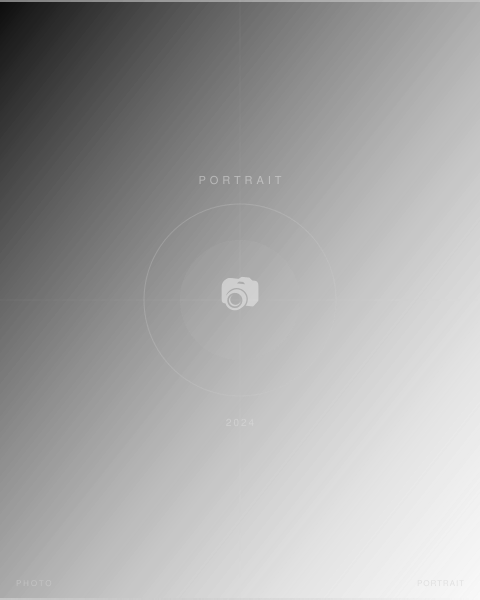

芸能プロダクション所属タレントの所属用ビジュアル撮影。複数名のタレントを短時間で効率よく、かつ個性を引き出しながら撮影する現場対応力が求められる。白ホリスタジオでのライティング設計をタレントごとに調整し、プロダクション用写真を制作。
担当：スチール撮影 / ライティング設計 / デジタル現像
Leica SL2, APO-SUMMICRON-SL 75mm f/2 ASPH.
- Photographer
- 森川亮太 (M.RYOHTA / @m_ichirinka)

芸能プロダクション所属タレントの所属用ビジュアル撮影。複数名のタレントを短時間で効率よく、かつ個性を引き出しながら撮影する現場対応力が求められる。白ホリスタジオでのライティング設計をタレントごとに調整し、プロダクション用写真を制作。
担当：スチール撮影 / ライティング設計 / デジタル現像
Leica SL2, APO-SUMMICRON-SL 75mm f/2 ASPH.